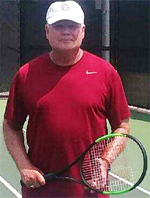

Previous: Playing Winning Doubles - The Return Game | 🏠 Strategy Home | Next: Preparing for Competition
Playing the Challenge Zone
Comprehensive unified tennis knowledge base — Fundamentals, Stroke Analysis, Reference Library, and more
Playing the Challenge Zone
Ray Reppert
How do you learn to play with confidence in the Challenge Zone?
Consider how the tennis court is perceived in doubles by players of different levels and ages. The prevailing philosophy is to stay back or close in, but definitely stay out of the middle. Normal strategy in doubles is "the team that closes in has a better chance to win" and the baseline player should be trying to set up his partner for a winning net play.
I have a contrarian view. I believe that if you are an average club or a senior player your court perspective should be different than that of a world class professional or junior. You can dream of playing like professionals but if you want to maximize your results need to be practical on the court. You need to learn to play the Challenge Zone with confidence.
An unusually high percentage of mistakes are made from two steps in front of the baseline to a step or two in front of the service line. Many seniors and average club players have physical, athletic or experience limitations that prevent them from moving quickly through the middle of the court, regardless whether the movement is forward or backward. That is simply a fact.
The key to overcoming this limitation is embracing play the mid court area, including the dreaded no man's land. I prefer to call this area, the Challenge Zone. In this article I want to outline ways to develop your skills in the Challenge Zone and turn them from a weakness into a strength.
Different Thinking
The solution is different thinking and different playing patterns. Playing in the Challenge Zone actually requires less court movement and coverage. However, you need to be much better at volleys, half-volleys and taking the ball out of the air. In order to adjust from traditional thinking and playing patterns it's imperative to practice different shots from these non-traditional position areas.
I am not advocating abandoning traditional position play. I am suggesting everyone have a practice plan incorporating play from all areas. Instead of expecting difficulty in the midcourt, I help players establish playing patterns to compliment the traditional positions. Having the confidence to return a ball from anywhere in the court can provide the most comprehensive game improvement for all levels and styles of play.
A coach can learn a lot by listening to players comments. Normally they repeat advice--and it's not incorrect—they have heard from coaches with traditional thinking. "You should've taken another step, you need to get closer to the net. This way balls will not be hit at your feet and you can attack the volley more quickly."
As I suggested this is great advice if you are young, very fit and looking to get a scholarship to play college tennis. However, if you are an average or a 60+ player thinking about retirement so you can play tennis more than one or two times a week, you need adjustment strategies.
If the other team's favorite shots are the lob or chip and you are having trouble covering them when you are at the net, adjust by moving back to the service line. You're signaling the other team, now I am more difficult to lob--go ahead try to hit at my feet. Your partner if he is in the backcourt also has to be ready to cover the short chip. This means coming in at least two steps or around the middle of no man's land to take the ball out of the air or to move up and cover the chip.
If you are persuaded by this argument, you need to practice in a different way to get comfortable with these new positions. There are four drills I have developed that will make the difference.
Drill #1: Volley Battle
4 players at the service line hitting down the line, then the same drill crosscourt.
The first drill is a half volley and volley battle. You need 4 players, 2 on each service line, about two feet in from the singles sideline. The coach or ball feeder is a little behind the service line. He is simultaneously feeding both opposite.
In the first variation of this drill the goal is to return the half volley or volley down line only. You are getting dozens and over time hundreds of repetitions of these new shots, building confidence for match play. The focus is on blocking or bumping (with minimum forward swing) the ball low over the net.
The other player also tries to block or bump the ball back down the line keeping the ball low. Keep the ball low, and you control the show.
Now progress to doing the same drill crosscourt. Do both directions 3 minutes each. Make sure each player gets to play from each position.
Drill #2: One Team in No Man's Land
One team starts in no man's land and moves forward.
In this drill, the fed players move back to the No Man's Land mid area between base and service line. The pro or feeder will again feed both players simultaneously. The players block, punch or push the ball down the line moving toward the service line ready to intercept. The opposition players are blocking the ball back down the line, trying to keep it low, as well . Don't back up, think forward. Then have the players switch sides Again make sure all 4 players drill from all 4 positions.
Drill #3: No Man's Land: Short Ball
Next, all 4 players move back to the No Man's Land or Challenge Zone mid area. The feeder feeds a short down the line approach shot. The players hit a drive approach shot down the line and move forward. The opposite player is ready to block punch or push the ball back down the line also moving forward.
Now move both teams to No Man's Land. Feeds can be approach shots or hit in the air.
Drill #4: No Man's Land: High Ball
Drill #4 Again all 4 at the No Man's Land mid area, coach will feed a highball (to both sides). The players will take the ball out of the air, hitting down the alley and of course moving forward to the service line. The opposing player is response ready to block, punch or push the ball back thinking defense.
Take a high ball in the air in no man's land and move forward.
Initially when I do this drill, I often hear complaints. "Why am I here, why can't I move up or back? Why are we doing this?" Initially these positions can feel awkward because for years they have been considered tennis taboo. The goal is to change this thinking and develop confidence getting the ball back from anywhere on the court. There should be no place that you think you can't push block or punch the ball back into the court.
One of my more timid players asked why it wouldn't be better to go behind the baseline if the opponent is going to smash the ball. "Don't you feel I would have less chance of being maimed?"
That is an OK position if the opponents only hit hard overheads. But if you are behind the baseline, the craftier player will hit a short angle or a short bump. Adjusting positions away from the traditional or standard placements takes some courage and a little bit of practice to get comfortable from anywhere on the court.
As players we should not feel any court position should be a mistake waiting to happen. Master the Challenge Zone and see how it affects your results.
Note: Filming for Challenge Zone by Tennisplayer Star Videographer Haley Thoresen.

Ray Reppert has had a distinguished career in coaching at all levels. He stated as a high school coach, and then moved to the Port Washington Tennis Academy in New York under Harry Hopman. He was the director of the Rossingnol Tennis Academy located outside of Innsbruck, Austria and a technicial consultant to the Yugoslavian Tennis Federation. He was the head women’s coach at William and Mary for thirteen years and at Miami University in Ohio for nine.
He was also Director/ Headmaster at the Harry Hopman Tennis Academy at Saddlebrook Resort and directed Nike Summer Tennis camps for 20 years. He is currently teaching privately at a country club in Cincinnati, Ohio. You can contact Ray at: rayreppert@gmail.com
Source: tennisplayer.net archive — Playing the Challenge Zone.docx (John Yandell teaching library, 2002-2022). Extracted and rendered as HTML for Tennis Future Lab.